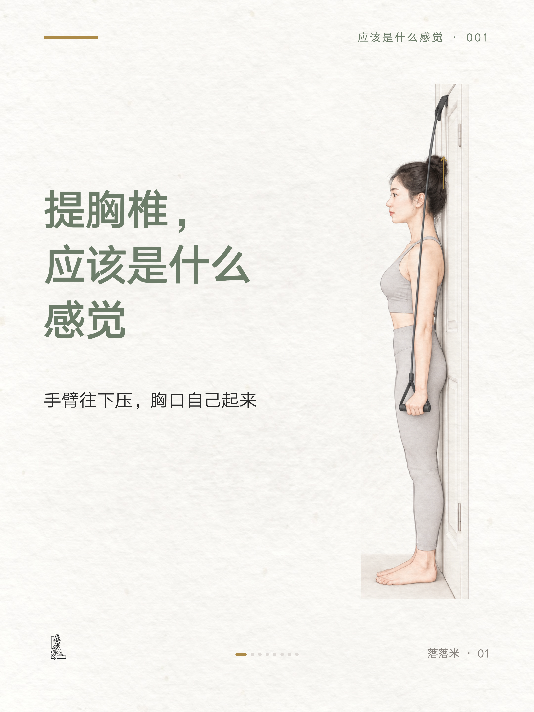
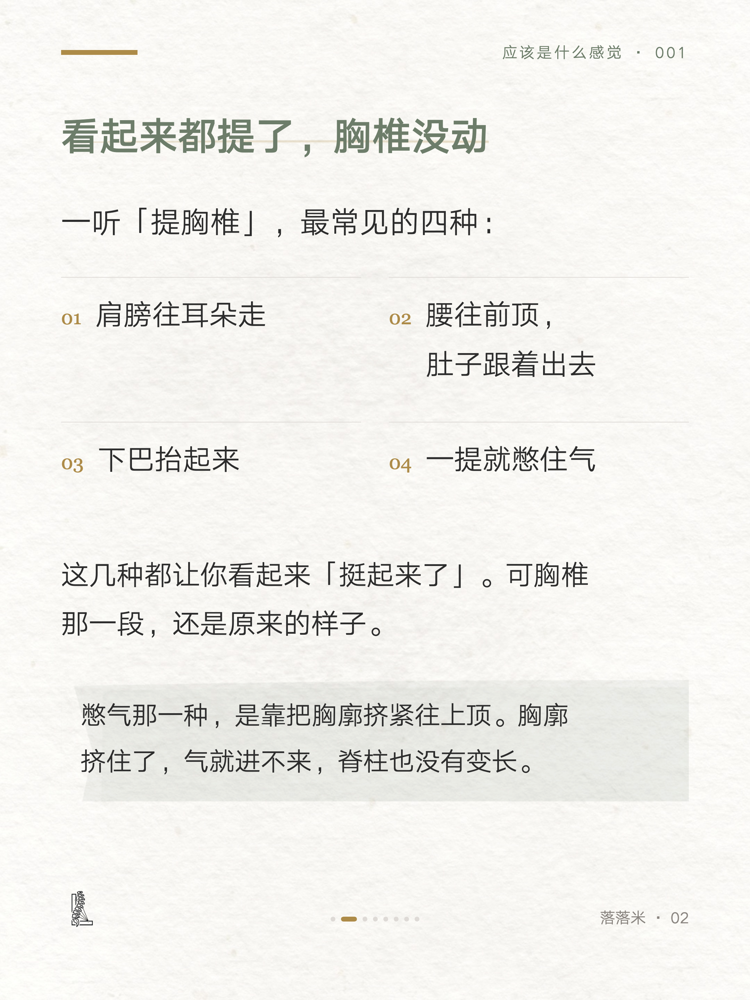
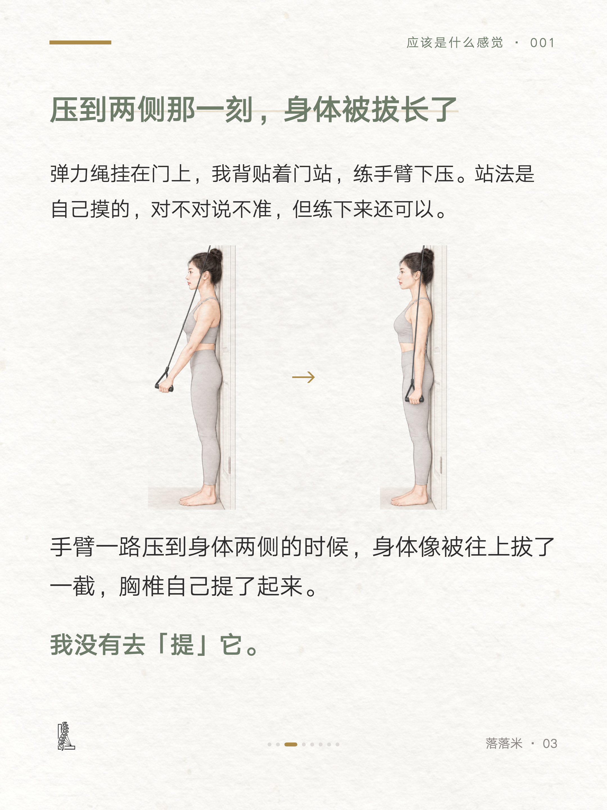
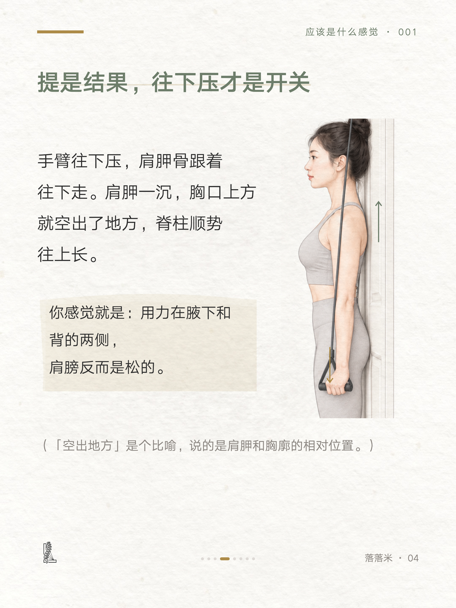
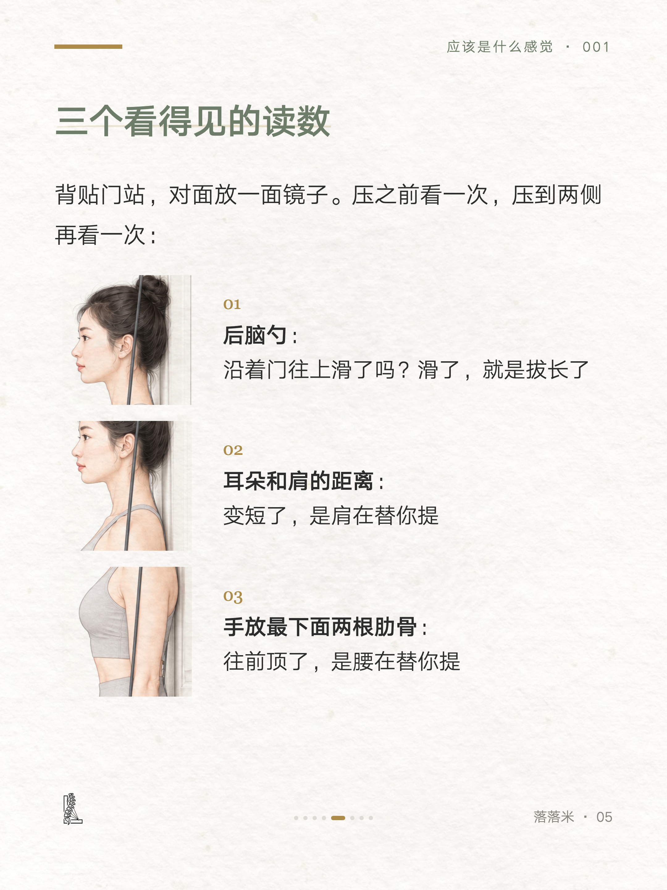
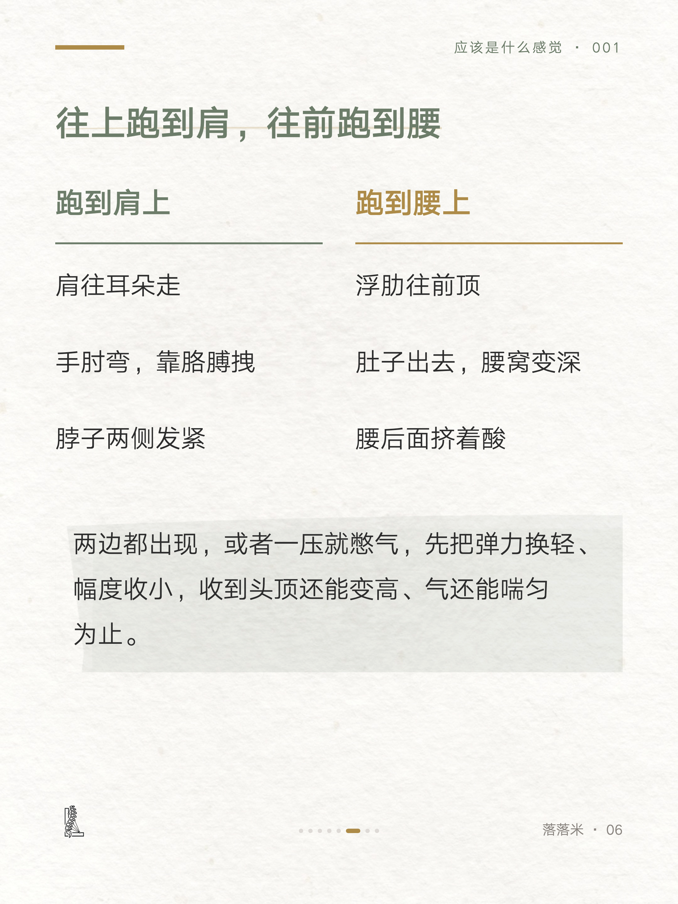
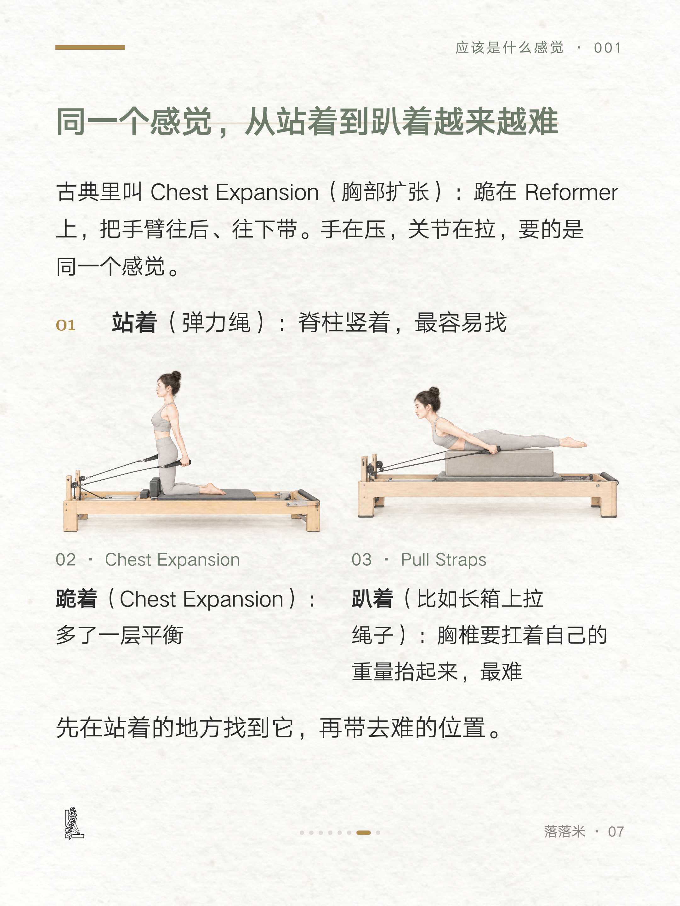
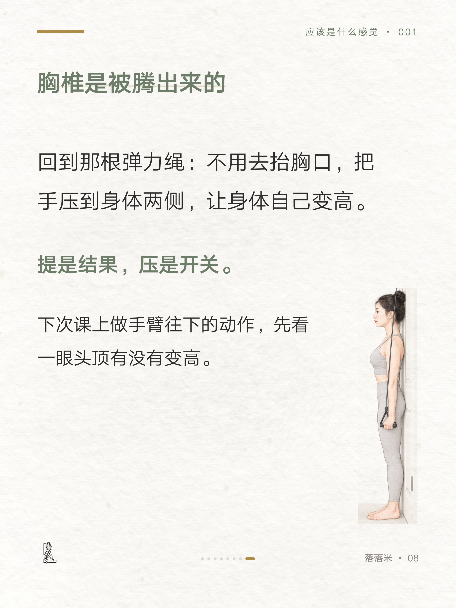

应该是什么感觉 #001
普拉提提胸椎，应该是什么感觉

1 / 8

2 / 8

3 / 8

4 / 8

5 / 8

6 / 8

7 / 8

8 / 8
← 左右滑动浏览全部卡片 →
一说提胸椎，肩先往耳朵走，或者腰往前顶，或者一提就憋气。我是在家用门上的弹力绳找到那一下的：手臂压到身体两侧，身体被拔长，胸椎自己起来了。
这一篇给你三个用镜子就能看的读数，和跑偏的两个方向。古典里的 Chest Expansion 练的是同一个感觉，从站着到趴着，一个比一个难。
「应该是什么感觉」是新开的系列，每篇只讲一个能验证的感觉。